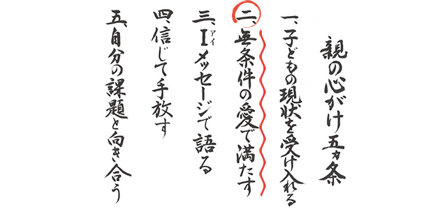
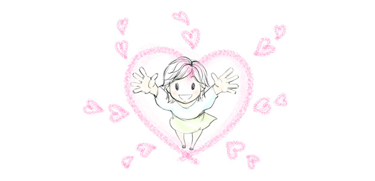

さて今回のテーマは、親が心がけるべき5ヶ条の1つ「無条件の愛で満たす」について。
親の心がけ5ヶ条
- 子どもの現状を受け入れる
- 無条件の愛で満たす
- Ｉ(ｱｲ)メッセージ
- 信じて手放す
- 自分の課題と向き合う
無条件の愛で満たすと言うと、多くの人は恐らく「ああ、子どもに条件つけず親の愛をしっかり注げということね！」と受け取るのではないでしょうか。
要するに「子どもを純粋に愛しなさい」ということだと。さらに「愛が足りないと子どもは健全に育たないという話なら知ってますよ。耳タコなくらい(笑)」と言うかも知れません。
ところが今回のお話、全然違うのです。
私が「無条件の愛で満たす」という形でお伝えしたいのは、子どもを愛することではありません。愛の対象は子どもではないのです。
話を進める前に、私がこのブログで親のあり方を語る際の基本的スタンス、立ち位置について少しだけ伝えておこうと思います。
それは一言で言うとこうなります。
子育てにおいてもっとも大切なことは親のあり方である
だから、子どもを「対象」と見なしてアレやコレやと働きかける行為は全く無意味である。
子どもに影響を与えるものは、実は親が日頃無意識に心に抱いている思い、姿勢の方であって意図的に子どもに伝える言動ではないから。
すなわちDoing（子どもに言ったりやったりすること）よりBeing（親のあり方そのもの）が大切である。
私はこれまでのブログで一貫してこの立場でお話しています。
多くの親は、子どもを良くしよう（変えよう）として色々働きかけますがうまく行きません。
それより、親は自分がもっている価値判断や善悪の基準、こり固まった常識や焦り、イラ立ちの感情、子どもへの思いこみに気づき、それらを手放したときにこそ子どもは良い方向へ変わるものなのです。
子どもを変えようとしてもあれほど効果はなかったのに、親が自分の姿勢―心の有り様―を変えただけで子どもが変わる。
このような転換を私自身数多く目にしてきたのです。
子どもを変えようとするのではなく、親自身があり方をシフトすることが何より重要だというのが私の立場であり、親の皆さんが気づいて欲しいところなのです。
自分を許し自分自身を愛で満たす
さて、話を戻しましょう。無条件の愛で満たす、その対象は子どもではないのです。
愛すべき対象は親であるあなた自身です。
親であるあなたは、まず第一に自分自身を愛で満たしてください。自分の内部奥深くにある愛を感じ、それをハートの部分に昇らせ十分に感じてみてください。
そしてそれらを身体全体に行き渡らせてください。自分を愛すと同時に愛されている思いを全身に広げましょう。
子どもに対する心配や不安、イラ立ちは元をただせば親が自分自身の過去の傷を癒していないことに起因することも多いのです。
自分の失敗や後悔、自責の念があると、子どもに「理想」や「完全」を求めてしまう。
なのでまず親が、自分自身の日頃抱えている後悔や自責の気持ちを徹底的に許し、愛で満たす。
こうして自分を許すことで子どもへのイラ立ちは減っていき、やがて消えます。
しかし自分を無条件で愛するのは案外難しいことに思えるかも知れません。それくらい多くの人は自分を認めていないのです。罪悪感をもってしまう人もいます。
でも次のことを良く考えてみてください。自分を無条件に愛せない人は、他人のことも無条件に愛せないという事実を。
さらに私たちは普段「愛」という言葉を実に安易に使っている事実があります。
私たちは誰かを愛しているというとき、それはたいてい執着であったり、所有欲であったり支配欲であったりします。つまり形を変えたエゴイズムに過ぎないのです。
これらは条件つきの愛といえるでしょう。
一方、親とくに母親の子に対する愛は崇高なものと言われます。いわゆる母性愛。
しかしこれにも疑問符はつきます。
行き過ぎた母性愛は我が子のみを特別視する意味で、また所有と支配欲に操られている意味でやはりエゴイズムだと言えるからです。
「子どもが勉強しない」「言うことを聞かない」「このままでは子どもの将来が心配だ」というのも、子どもへの愛というより、親の理想（望み）にこたえないと愛してやらないという条件つき愛なのです。
子どもの存在を無条件で受け入れる
ここまで読んでこられた方は「何か無条件の愛って小難しいものなのね…」と感じたかも知れませんが、そうではありません。
無条件という言葉にことさらハードルの高さを覚える必要はないのです。愛という言葉に過剰に反応しないでください。
こう考えてください。
自分を愛することは自分を許し認めること。
先に言ったことの繰り返しになりますが、自分を愛するとは何も特別なことではなく、自分がどんな行いをしたか、何を思ったかなどに関係なく自分をひたすら認め許していくことです。
ただただ、自分の中にある暖かい部分を感じ自分を許し認めていく。誰にでもできるカンタンなことなのです。
その上で、かつて誰かに愛された記憶や子どもの頃純粋に感じていた暖かい気持ち―例えばペットや自然の風景、友だちなど―を思い出しても良いでしょう。
自由に楽しくやってください。
そしてもし、自分の中に愛が広がってくるのを感じたら、全身にその感覚をひたしその愛があふれ出して周囲に広がっていくのをイメージしましょう。
あなたのまわりの人々に広がっていくのをイメージしてください。

できればこのワークを1日5分でも続けてください。
そのうち慣れれば1分でも10秒でも構いません。いずれにしても、あなたは愛で包まれた感覚で日常を過ごすことができるようになれます。
こうしてあなたが無条件の愛で満たされて生きていくとき、あなたは子どもに対しても無条件で認めることができるようになるでしょう。
それはちょうど、子どもが生まれた日に感じた「無事生まれてくれてありがとう♡」という感謝の気持ちに近いものかも知れません。
あるいは、子どもがごく幼い時によく感じていた「生きていて元気なだけで幸せ♡」という感覚に近いかも知れません。
そして存在していることに対する喜びの念がわき起こってきたら、それこそが無条件の愛なのです。
このイメージで過ごしていると不思議なことが起こります。子どもが変わるのです。たとえ外側の姿が変わらなくても、少なくとも内面に変化が生じます。そして最終的には行動も健全化します。
要するに親のあり方が変わると子どもが変わる
親であるあなたの心が幸せであること。それが全ての始まりであるということです。